산업위생관리산업기사 (2016-05-08 기출문제)
1과목: 산업위생학 개론
1. 산업스트레스의 관리에 있어서 개인차원에서의 관리 방법으로 맞는 것은?
- 긴장 이완훈련
- 사회적 지원의 제공
- 개인의 적응수준 제고
- 조직구조와 기능의 변화
(정답률: 86%)

2. 산업재해의 기본원인인 4M에 해당하지 않는 것은?
- Man
- Media
- Management
- Material
(정답률: 80%)
3. 작업강도와 작업대사율의 연결이 적절한 것은?
- 경작업 : 0 ~ 4
- 중등작업 : 4 ~ 5
- 중(重)작업 : 5 ~ 6
- 격심한 작업 : 10이상
(정답률: 63%)
4. 소음의 정의를 설명한 것 중 맞는 것은?
- 불쾌하고 원하지 않는 소리
- 일정 범위의 강도를 갖는 소리
- 주파수가 높고 규칙적으로 발생하는 소리
- 주파수가 낮고 불규칙적으로 발생하는 소리
(정답률: 87%)
5. 질병 발생의 요인을 제거하면 질병 발생이 얼마나 감소될 것인가를 말해주는 위험도를 나타내는 것은?
- 기여위험도
- 상대위험도
- 절대위험도
- 비교위험도
(정답률: 68%)
6. 산업위생의 역사적 인물과 업적을 잘못 연결한 것은?
- Galen – 광산에서의 산 증기 위험성 보고
- Robert Owen – 굴뚝청소부의 제정에 기여
- Alice Hamilton – 유해물질 노출과 질병의 관계를 확인
- Sir George Baker – 사이다 공장에서 납에 의한 복통 발표
(정답률: 81%)
7. 미국산업위생학술원(AAIH)은 산업위생분야에 종사하는 사람들이 지켜야 할 윤리강령을 채택하였다. 윤리강령의 주요사항과 거리가 먼 것은?
- 전문가로서의 책임
- 근로자에 대한 책임
- 일반대중에 대한 책임
- 환경관리에 대한 책임
(정답률: 87%)
8. 사업안전보건법령상 제조ㆍ수입ㆍ양도ㆍ제공 또는 사용이 금지되는 유해물질에 해당하는 것은?
- 베릴륨
- 황린(黃燐)성냥
- 염화비닐
- 휘발성 콜타르피치
(정답률: 77%)
9. 일반적으로 성인 남성근로자가 운동할 떄의 산소소비량(oxygen uptake)은 약 얼마까지 증가하는가?
- 0.25L/min
- 2.5L/min
- 5L/min
- 10L/min
(정답률: 77%)
10. 권장무게한계가 3.1kg이고, 물체의 무게가 8kg 일 때 중량물 취급지수는 약 얼마인가?
- 1.91
- 2.12
- 2.58
- 2.90
(정답률: 78%)
11. 인체가 외부의 환경 및 자극에 대하여 적응하고 인간의 신체 상태를 일정하게 유지하려는 경향을 무엇이라 하는가?
- 반응(Reaction)
- 조화(Harmony)
- 보상(Compensation)
- 항상성(Homeostasis)
(정답률: 85%)
12. 피로의 증상과 거리가 먼 것은?
- 소변의 양이 줄고 진한 갈색을 나타낸다.
- 맥박이 빨라지고 회복되기까지 시간이 걸린다.
- 체온이 높아지나 피로정도가 심해지면 도리어 낮아진다.
- 혈당치가 낮아지고 젖산과 탄산양이 감소한다.
(정답률: 85%)
13. 산업위생활동의 기본 4요소와 거리가 먼 것은?
- 행정
- 예측
- 평가
- 관리
(정답률: 92%)
14. 산업피로를 예방하기 위한 개선대책으로 적당하지 않는 것은?
- 충분한 수면은 피로에방과 회복에 효과적이다.
- 작업속도를 빨리하여 되도록 작업시간을 단축시킨다.
- 적절한 작업시간과 적절한 간격으로 휴식시간을 두어야 한다.
- 과중한 육체적 노동은 기계화하여 육체적 부담을 줄이고, 너무 정적인 작업은 적정한 동적인 작업으로 전환한다.
(정답률: 93%)
15. 육체적 작업능력이 15kcal/min인 성인 남성 근로자가 1일 8시간 동안 물체를 운반하고 있다. 작업대사량이 6.5kcal/min, 휴식시의 대사량이 1.5kcal/min일 때 매시간별 휴식시간과 작업시간으로 가장 적합한 것은?(단, Hertig의 산시기을 적용한다.)
- 12분 휴식, 48분 작업
- 18분 휴식, 42분 작업
- 24분 휴식, 36분 작업
- 30분 휴식, 30분 작업
(정답률: 64%)
16. 20℃, 1기압에서 MEK 50ppm은 약 몇 mg/m3인가?(단, MEK의 그램분자량 72.06이다.)
- 139.9
- 149.9
- 249.7
- 299.7
(정답률: 61%)
17. 산소결핍장소에서의 관리 방법에 관한 내용으로 틀린 것은?
- 생체 중에서 산소결핍에 대하여 가장 민감한 조직은 뇌이다.
- 산소결핍이란 공기 중의 산소농도가 18% 미만인 상태를 말한다.
- 산소결핍의 우려가 있는 경우에는 산소의 농도를 측정하는 사람을 지명하여 측정하도록 하여야 한다.
- 맨홀 지하작업 등 산소결핍이 우려되는 장소에서는 근로자에게는 구명밧줄과 방독마스크를 착용하도록 하여야 한다.
(정답률: 88%)
18. 크레졸의 노출기준에는 시간가중평균노출기준(TWA)외에 '피부(Skin)'표시가 표시되어 있다. 이 표시에 대한 설명으로 틀린 것은?
- 피부자극, 피부질환 및 감작 등과 관련이 깊다.
- 피부의 상처는 이러한 물질의 흡수에 큰 영향을 미친다.
- 점막과 눈 그리고 경피로 흡수되어 전신 영향을 일으킬 수 있는 물질을 뜻한다.
- 공기 중 노출농도의 측정과 함께 생물학적 지표가 되는 물질도 병행하여 측정한다.
(정답률: 55%)
19. 산업안전보건법령산 사업주는 근골격계 부담 작업에 근로자를 종사하도록 하는 경우에는 몇 년마다 유해요인조사를 실시하여야 하는가?
- 1년
- 2년
- 3년
- 5년
(정답률: 67%)
20. 직업병 발생요인 중 간접요인에 대한 설명과 거리가 먼 것은?
- 작업강도와 작업시간 모두 직업병 발생의 중요한 요인이다.
- 작업장의 환경은 직업병의 발생과 증세의 악화를 조장하는 원인이 될 수 있다.
- 일반적으로 연소자의 직업병 발병률은 성인 보다 낮게 나타나는 것으로 알려져 있다.
- 작업의 종류가 같더라도 작업방법에 따라서 해당 직장에서 발생하는 질병의 종류와 발생빈도는 달라질 수 있다.
(정답률: 88%)
2과목: 작업환경측정 및 평가
21. 납이 발생되는 공정에서 공기 중 납 농도를 측정하기 위해 공기시료를0.550m3 채취하였고 이 시료를 10mL의 10% HNO3에 용해시켰다. 원자흡광분석기를 이용하여 시료 중 납을 분석하여 검량선과 비교한 결과 시료 용액 중 납의 농도가 49ug/mL로 나타났다면 채취한 시간 동안의 공기 중 납의 농도(mg/m3)는?
- 0.29
- 0.49
- 0.69
- 0.89
(정답률: 35%)
22. 미국 ACGIH에서 정의한 흉곽성 입자상 물질의 평균 입경(μm)은?
- 3
- 4
- 5
- 10
(정답률: 72%)
23. 작업장의 작업환경 측정결과가 보기와 같았다면 이 작업장에 대한 평가로 가장 알맞은 것은?(단, 측정농도는 시간가중평규농도를 의미한다.)
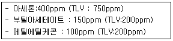
- 각각의 측정결과가 TLV를 초과하지 않으므로 노출기준농도를 초과하지 않는다.
- 각각의 측정결과가 노출기준 농도를 초과하지는 않지만 여러 가지 유해물질이 공존하고 있으므로 노출기준을 초과한다고 보아야 한다.
- 평가는
 으로 계산하여 계산치로 볼 때 노출기준 농도를 초과하고 있다. ( C: 측정농도, T : TLV)
으로 계산하여 계산치로 볼 때 노출기준 농도를 초과하고 있다. ( C: 측정농도, T : TLV) - 혼합물의 측정결과는
 으로 평가하여 계산치를 볼 떄 노출기준 농도를 초과하고 있다. (C : 측정농도, T : 측정시간)
으로 평가하여 계산치를 볼 떄 노출기준 농도를 초과하고 있다. (C : 측정농도, T : 측정시간)
(정답률: 80%)
24. 허용기준 대상 유해인자의 노출 농도 측정 및 분석을 위한 화학시험의 일반사항 중 용어에 관한 내용으로 틀린 것은?(단, 고용노동부 고시 기준)
- “회수율”이란 흡착제에 흡착된 성분을 추출과정을 거쳐 분석 시 실제 검출되는 비율을 말하낟.
- “진공”이란 따로 규정이 없는 한 15mmHg이하를 뜻한다.
- 시험조작 중 “즉시”란 30초 이내에 표시된 조작을 하는 것을 말한다.
- “약”이란 그 무게 또는 부피에 대하여 ±10%이상의 차이가 있지 아니한 것을 말한다.
(정답률: 68%)
25. 우리나라 작업장 내 공기중의 석면섬유, 먼지, 입자상물질, 벤젠 그리고 방사성물질 등의 농도와 대기 중 이산화황 농도의 측정 결과를 분포화시킬 때 볼 수 있는 산업위생통계의 일반적인 분포는?
- 정규분포
- 대수 정규분포
- t-분포
- f-분포
(정답률: 55%)
26. 직접포집방법에 사용되는 시료채취백의 특징으로 가장 거리가 먼 것은?
- 가볍고 가격이 저렴할 뿐 아니라 깨질 염려가 없다.
- 개인시료 포집도 가능하다.
- 연속시료채취가 가능하다.
- 시료채취 후 장시간 보관이 가능하다.
(정답률: 74%)
27. 크롬에 대한 흡광광도 분석법에 사용되는 발색액은?
- 디티존
- 디페닐카바지드
- 알리자린콤플렉손
- 디에틸디티오카바민산나트륨
(정답률: 56%)
28. 공기 중 벤젠(분자량=78.1)을 활성탄관에 0.1L/분의 유량으로 2시간 동안 채취하여 분석한 결과 2.5mg이 나왔다. 공기 중 벤젠의 농도(ppm)은? (단, 공시료에서는 벤젠이 검출되지 않았으며 25℃, 1기압 기준)
- 약 65
- 약 85
- 약 115
- 약 135
(정답률: 50%)
29. 납 분석 시 구연산 및 시안염을 가하여 약알칼리성으로 조제한 납용액에 디페닐티오카아비죤을 가하면 납이온과의 반응에 의하여 생성되는 적색의 킬레이트 화합물을 유기용매로 추출해서 흡광도를 정량하는 분석법은?
- 디티죤분석법
- 폴라로그래프분석법
- 현광광도분석법
- 이온분석법
(정답률: 47%)
30. 가스상 물질의 분석 및 평가를 위해 [알고 있는 공기 중 농도]를 만드는 방법인 Dynamic Method에 관한 설명으로 옳지 않은 것은?
- 매우 일정한 농도를 유지하기 용이하다.
- 지속적인 모니터링이 필요하다.
- 만들기가 복잡하고 가격이 고가이다.
- 소량의 누출이나 벽면에 의한 손실은 무시할 수 있다.
(정답률: 63%)
31. 활성탄관에 비하여 실리카겔관(흡착)을 사용하여 채취하기 용이한 시료는?
- 알코올류
- 방향족 탄화수소류
- 나프타류
- 니트로벤젠류
(정답률: 61%)
32. 입경이 14μm이고, 밀도가 1.5g/cm3인 입자의 침강속도(cm/s)는?
- 0.55
- 0.68
- 0.72
- 0.88
(정답률: 71%)
33. 음압도 측정시 정상청력을 가진 사람이 1000Hz에서 가청할 수 있는 최소 음압 실효치(N/m2)는?
- 0.002
- 0.0002
- 0.00002
- 0.000002
(정답률: 54%)
34. 유기화합물을 운반기체와 함께 수소와 공기의 불꽃속에 도입함으로써 생기는 이온의 증가를 이용한 검출기는?
- 열전도도형 검출기(TCD)
- 불꽃이온화형 검출기(FID)
- 전자포획형 검출기(ECD)
- 불꽃광전자형 검출기(FPD)
(정답률: 73%)
35. 작업장 내의 조명상태를 조사하고자 할 때 측정해야 되는 기본 항목에 포함되지 않는 것은?
- 조명도
- 흡광도
- 휘도
- 반사율
(정답률: 53%)
36. 유해화학물질 분석 시 침전법을 이용한 적정이 아닌 것은?
- Volhard법
- Mohr법
- Fajans법
- Stiehler법
(정답률: 65%)
37. 측정기구의 보정을 위한 비누거품미터(Soap bubble meter)의 활용 시 두 눈금 통과 측정시간의 정확성 범위와 눈금도달 시간 측정 시 초시계의 측정 한계범위가 바르게 표기된 것은?
- 측정시간의 정확성 ±1초 이내, 초시게로 1초까지 측정한다.
- 측정시간의 정확성 ±2초 이내, 초시게로 0.1초까지 측정한다.
- 측정시간의 정확성 ±1초 이내, 초시게로 0.01초까지 측정한다.
- 측정시간의 정확성 ±1초 이내, 초시게로 0.1초까지 측정한다.
(정답률: 59%)
38. 가스크로마토그래피의 분리관은 성능은 분해능과 효율로 표시할 수 있다. 분해능을 높이려는 조작으로 틀린 것은?
- 분리관의 길이를 길게 한다.
- 고정상의 양을 크게 한다.
- 고체지지체의 입자 크기를 작게 한다.
- 일반적으로 저온에서 좋은 분해능을 보이므로 온도를 낮춘다.
(정답률: 54%)
39. 실카겔에 대한 친화력이 가장 큰 물질은?
- 케톤류
- 올레핀류
- 에스테르류
- 방향족탄화수소류
(정답률: 71%)
40. 고열 측정구분이 습구온도이고, 측정기기가 자연습구 온도계인 경우 측정시간 기준은? (단, 고용노동부 고시 기준)
- 5분 이상
- 10분 이상
- 15분 이상
- 25분 이상
(정답률: 59%)
3과목: 작업환경관리
41. 먼지의 한쪽 끝 가장자리와 다른쪽 끝 가장자리 사이의 거리를 측정함으로써 입자상물질의 크기를 과대평가 할 가능성이 있는 직경은?
- Martin 직경
- Feret 직경
- 등면적 직경
- 공기역학적 직경
(정답률: 64%)
42. 공기 중에 트리클로로에틸렌(trichloroethylene)이 고농도로 존재하는 작업장에서 아크 용접을 실시하는 경우 트리클로로에틸렌이 어떠한 물질로 전환될 수 있는가?
- 사염화탄소
- 벤젠
- 이산화질소
- 포스겐
(정답률: 53%)
43. B공장 집진기용 송풍기의 소음을 측정한 결과, 가동시는 90dB(A)였으나, 가동 중지상태에서는 85dB(A)였다. 이 송풍기의 실제 소음도는?
- 86.2dB(A)
- 87.1dB(A)
- 88.3dB(A)
- 89.4dB(A)
(정답률: 47%)
44. 입자상 물질의 호흡기 내 침착기전에서 먼지의 운동속도가 낮은 미세기관지나 폐포에서는 어떠한 기전이 중요한 역할을 하는가?
- 충돌
- 중력침강
- 확산
- 간섭
(정답률: 57%)
45. 질소의 마취작용에 관한 설명으로 옳지 않은 것은?
- 예방으로는 질소대신 마취현상이 적은 수소 또는 헬륨 같은 불활성 기체들로 대치한다.
- 대기압 조건으로 복귀 후에도 대뇌 장해 등 후유증이 발생된다.
- 수심 90~120m에서 환청, 환시, 조울증, 기억력 감퇴 등이 나타난다.
- 질소가스는 정상기압에서는 비활성이지만 4기압 이상에서는 마취작용을 나타낸다.
(정답률: 46%)
46. 비전리 방사선인 극저주파 전자장에 관한 내용으로 옳지 않은 것은?
- 통상 1~300Hz의 주파수 범위를 극저주파 전자장이라 한다.
- 직업적으로 지하철 운전기사, 발전소 기사 등 고압 전선 가까이서 근무하는 근로자들의 노출이 크다.
- 장기 노출시 피부장해와 안장해가 발생되는 것으로 알려져 있다.
- 노출범위와 생물학적 영향면에서 가장 관심을 갖는 주파수 영역은 전력 공급계통의 교류와 관련되는 50~60Hz 범위이다.
(정답률: 40%)
47. 감압병의 예방과 치료에 관한 설명으로 옳지 않은 것은?
- 특별히 잠수에 익숙한 사람을 제외하고는 1분에 10m 정도씩 잠수하는 것이 안전하다.
- 감압이 끝날 무렵 순수한 산소를 흡입시키면 에방적 효과가 있을 뿐 아니라 감압시간을 25% 가량 단축시킨다.
- 감압병 증상이 발생하였을 때에는 환자를 바로 원래 고압환경에 복귀시키거나 인공적 고압실에 넣어 혈관 및 조직 속에 발생한 질소의 기포를 다시 용해시킨 다음 천천히 감압한다.
- 헬륨은 질소보다 확산속도가 작고 체외로 배출되는 시간이 질소에 비하여 2배 가량이 길어 고압환경에서 작업할 때는 질소를 헬륨으로 대치한 공기를 호흡시킨다.
(정답률: 51%)
48. 유해화학물질이 체내로 침투되어 해독되는 경우 해독반응에 가장 중요한 작용을 하는 것은?
- 적혈구
- 효소
- 림프
- 백혈구
(정답률: 67%)
49. 다음의 가동 중인 시설에 대한 작업환경대책 중 성격이 다른 것은?
- 작업시간 변경
- 작업량 조절
- 순환 배치
- 공정 변경
(정답률: 57%)
50. 자연조명을 하고자 하는 집에서 창의 면적은 바닥 면적의 몇 %로 만드는 것이 가장 이상적인가?
- 10~15%
- 15~20%
- 20~25%
- 25~30%
(정답률: 74%)
51. 인체에 대한 유해물질의 유해성을 좌우하는 인자가 아닌 것은 다음 중 어느 것인가?
- 노출 농도
- 작업 강도
- 노출 시간
- 조명의 강도
(정답률: 72%)
52. 작업환경 개선의 기본대책 중 하나인 대치의 방법과 가장 거리가 먼 것은?
- 시설의 변경
- 공정의 변경
- 물질의 변경
- 위치의 변경
(정답률: 58%)
53. 피부 보호크림의 종류 중 광산류, 유기산, 염류 및 무기염류 취급작업 시 주로 사용하는 것은?(단, 적용화학물질은 밀랍, 탈수라노린, 파라핀, 유동파라핀, 탄산마그네슘)
- 친수성크림
- 소수성크림
- 차광크림
- 피막형크림
(정답률: 49%)
54. 출력 0.01watt의 점음원으로부터 100m 떨어진 곳의 SPL은? (단, 무지향성 음원, 자유공간의 경우)
- 49dB
- 53dB
- 59dB
- 63dB
(정답률: 53%)
55. 비교적 높은 증기압(vapor pressure)과 낮은 허용기준치를 갖는 유기용제를 사용하는 작업장을 관리할 때 가장 효과적인 방법은?
- 전체 환기를 실시한다.
- 국소 배기를 실시한다.
- Fan을 설치한다.
- 칸막이를 설치한다.
(정답률: 51%)
56. 산업위생의 관리적 측면에서 대치 방법인 공정 또는 시설의 변경 내용으로 옳지 않은 것은?
- 가연성 물질을 저장할 경우 유리병보다는 철제통을 사용
- 페인트 도장 시 분사 대신 담금 도장으로 변경
- 금속제품 이송 시 롤러의 재질을 철제에서 고무나 플라스틱을 사용
- 큰 날개 저속의 송풍기 대신 작은 날개 고속 회전하는 송풍기 사용
(정답률: 71%)
57. 작업장의 근로자가 NRR이 15인 귀마개를 착용하고 있다면 차음 효과(dB)는?
- 2
- 4
- 6
- 8
(정답률: 78%)
58. 감압에 따른 기포형성량을 좌우하는 요인과 가장 거리가 먼 것은?
- 조직에 용해된 가스량
- 혈류를 변화시키는 상태
- 감압 속도
- 기포 순환 주기
(정답률: 58%)
59. 분진으로 인한 진폐증을 예방하기 위한 대책으로서 적합하지 않은 것은?
- 분진발생원이 비교적 많고 분진농도가 높은 경우에는 국소배기장치의 설치보다 우선적으로 방진마스크 작용을 고려한다.
- 2차 비산분진이 발생하지 않도록 작업장 바닥을 청결히 한다.
- 분진발생원과 근로자를 분리하는 방법으로 원격조정장치 등을 사용할 수 있다.
- 연마, 분쇄, 주물작업시에는 습식으로 작업하여 부유분진을 감소시키도록 해야 하낟.
(정답률: 69%)
60. 적외선 관한 설명으로 가장 거리가 먼 것은?
- 적외선은 대부분 화학작용을 수반하며 가시광선과 자외선 사이에 있다.
- 적외선에 강하게 노출되면 안검록염, 각막염, 홍채위축, 백내장 등 장애를 일으킬 수 있다.
- 일명 열선이라고 하며 온도에 비례하여 적외선을 복사한다.
- 적외선은 가시광선보다 긴 파장으로 가시광선과 가까운 쪽을 근적외선이라 한다.
(정답률: 66%)
4과목: 산업환기
61. 원형이나 정사각형의 후드인 경우 필요 환기량은 Dalla Valle 공식 (Q=V(10x2+A)을 활용한다. 이 공식은 오염원에서 후드까지의 거리가 닥트직경의 몇 배 이내일 때만 유효한가?
- 1.5배
- 2.5배
- 3.5배
- 5.0배
(정답률: 54%)
62. 푸쉬-풀(push-pull)후드에 관한 설명으로 맞는 것은?
- push공기의 속도는 빠를수록 좋다.
- 일반적으로 상방흡인형 외부식 후드에 사용된다.
- 후드와 작업지점과의 거리가 가까운 경우에 주로 활용된다.
- 후드로부터 멀리 떨어져서 발생하는 유해물질을 후드 가까이 가도록 밀어준다.
(정답률: 56%)
63. 일정 용적을 갖는 작업장 내에서 매시간 Mm3의 CO2가 발생할 때 필요환기량(m3/hr)공식으로 맞는 것은?(단, Cs는 작업환경 실내 CO2기준농도(%), CO는 작업환경 실외 CO2농도(%)를 나타낸다.)
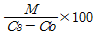
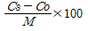
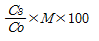
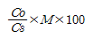
(정답률: 60%)
64. 덕트에서 공기흐름의 평균 속도압은 16mmH2O였다. 덕트에서의 반송속도(m/s)는 약 얼마인가?(단, 공기의 밀도는 1.21kg/m3으로 한다.)
- 10
- 16
- 20
- 25
(정답률: 50%)
65. 송풍량이 증가해도 동력이 증가하지 않는 장점을 가지며 한계부하송풍기라고도 하는 송풍기는?
- 프로펠러형 송풍기
- 후향 날개형 송풍기
- 축류 날개형 송풍기
- 전향 날개형 송풍기
(정답률: 60%)
66. 표준 상태에서 관내 속도압을 측정한 결과 10mmH2O였다면 관내 유속은 약 얼마인가?
- 10.0m/sec
- 12.8m/sec
- 18.1m/sec
- 40.0m/sec
(정답률: 61%)
67. 플랜지가 부착된 슬롯형 후드의 필요송풍량은 플랜지가 없는 슬롯형 후드에 비하여 필요송풍량이 몇 % 가 감소되는가? (단, 기타 조건의 변화는 없다.)
- 15%
- 20%
- 30%
- 45%
(정답률: 51%)
68. 유량이 600m3/min인 배기가스 중의 분진을 2m/min의 여과속도로 bag filter에서 처리하고자 할 때 필요한 여포집진기의 면적은 얼마인가?
- 100m2
- 200m2
- 300m2
- 400m2
(정답률: 69%)
69. 톨루엔(분자량 92)의 증기 발생량은 시간당 300g 이다. 실내의 평균 농도를 노출기준(55ppm)이하로 하려면 유효 환기량은 약 몇 m3/min인가?(단, 안전계수는 4이고, 공기의 온도는 21℃이다.)
- 83.83
- 95.26
- 104.78
- 5715.42
(정답률: 34%)
70. 덕트의 시작점에서 공기의 베나수축(vena contracta)이 일어난다. 베나수축이 일반적으로 붕괴되는 지점으로 맞는 것은?
- 덕트 직경의 약 2배쯤에서
- 덕트 직경의 약 3배쯤에서
- 덕트 직경의 약 4배쯤에서
- 덕트 직경의 약 5배쯤에서
(정답률: 38%)
71. 전체환기시설을 설치하기에 가장 적절한 곳은?
- 오염물질의 독성이 높은 경우
- 근로자가 오염원에서 가까운 경우
- 오염물질이 한 곳에 모여 있는 경우
- 오염물질이 시간에 따라 균일하게 발생하는 경우
(정답률: 84%)
72. 국소배기장치의 배기덕트 내 공기에 의한 마찰손실과 관련이 가장 적은 것은?
- 공기속도
- 덕트직경
- 덕트길이
- 공기조성
(정답률: 71%)
73. 후드의 제어풍속을 측정하기에 가장 적합한 것은?
- 열선풍속계
- 피토관
- 카타온도계
- 마노미터
(정답률: 46%)
74. 전기집진장치의 장점이 아닌 것은?
- 고온 가스의 처리가 가능하다.
- 압력손실이 낮고 대용량의 가스를 처리할 수 있다.
- 설치면적이 적고, 기체상의 오염물질의 포집에 용이하다.
- 0.01μm정도의 미세 입자의 포집이 가능하여 높은 집진효율을 얻을 수 있다.
(정답률: 61%)
75. 21℃, 1기압에서 벤젠 1.36L가 증발 할 때 발생하는 증기의 용량은 약 몇 L 정도가 되겠는가?(단, 벤젠의 분자량은 78.11, 비중은 0.879이다.)
- 327.5
- 342.7
- 368.8
- 371.6
(정답률: 39%)
76. 온도 95℃, 압력 720mmHg에서 부피 180m3인 기체가 있다. 21℃, 1기압에서 이 기체의 부피는 약 얼마가 되겠는가?
- 125.6m3
- 136.2m3
- 151.4m3
- 220.3m3
(정답률: 53%)
77. 외부식 후드는 발생원과 어느 정도의 거리를 두게 됨으로 발생원 주위의 방해기류가 발생되어 후드의 흡인유량을 증가시키는 요인이 된다. 방해기류의 방지를 위해 설치하는 설비가 아닌 것은?
- 댐퍼
- 플랜지
- 칸막이
- 풍향관
(정답률: 47%)
78. 국소배기시스템 설치 시 고려사항으로 적절하지 않은 것은?
- 가급적 원형덕트를 사용한다.
- 후드는 덕트보다 두꺼운 재질을 선택한다.
- 송풍기를 연결할 때 에는 최소 덕트 반경의 6배 정도는 직선구간으로 하여야 한다.
- 곡관의 곡률반경은 최소 덕트 직경의 1.5이상으로 하며, 주로 2.0을 사용한다.
(정답률: 66%)
79. 정방형 송풍관의 압력손실()을 계산하는 식은? (단, λ : 마찰손실계수, l : 송풍관의 길이, Pv :속도압, a,b : 변의길이 이다.)
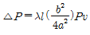
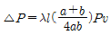
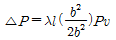
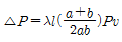
(정답률: 61%)
80. 송풍기 성능곡선과 시스템 요구곡선이 만나는 송풍기 동작점은 현장의 상황에 따라 여러 형태로 변할 수 있다. 송풍기가 역회전하고 있거나 성능이 저하되어 회전수가 부족한 경우를 나타내는 그림은?
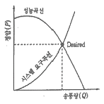
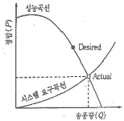
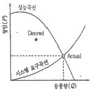
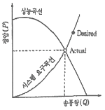
(정답률: 50%)